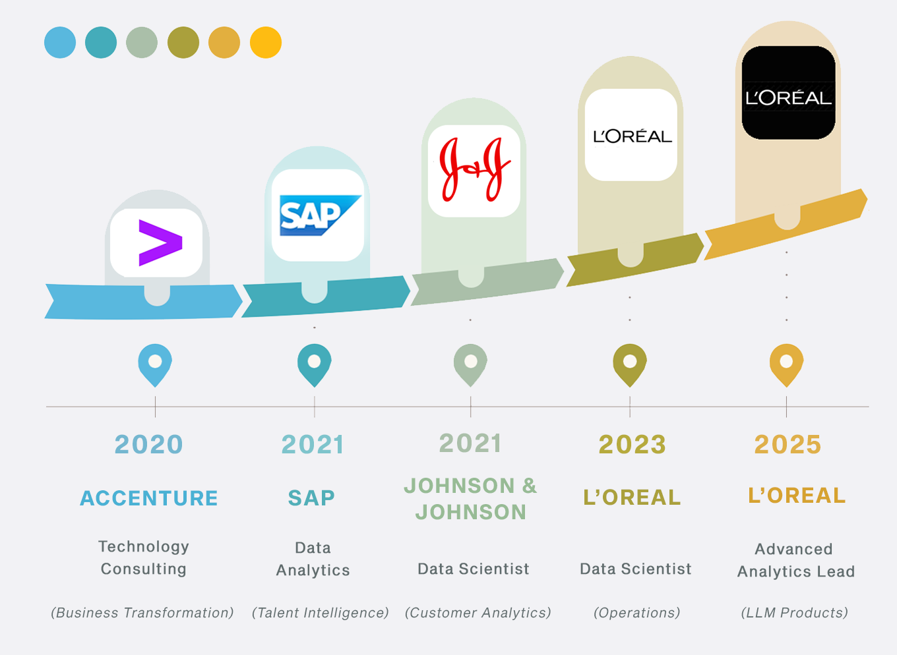

Recent Projects


With 10+ years of coding experience and 5+ years of industry experience at L’Oréal and J&J, I’ve worked across the full lifecycle: from supply chain optimization to consumer-facing intelligence.
I build data science and ML systems end-to-end, from predictive modelling to production-ready LLM tools.
Always learning, always building :) Let's connect:
